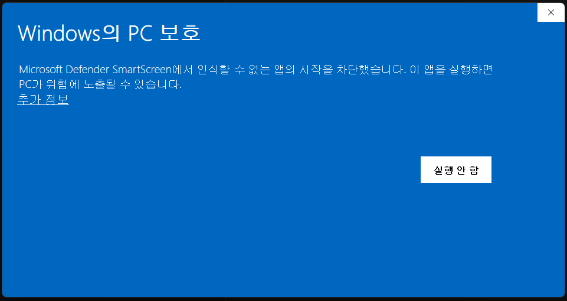
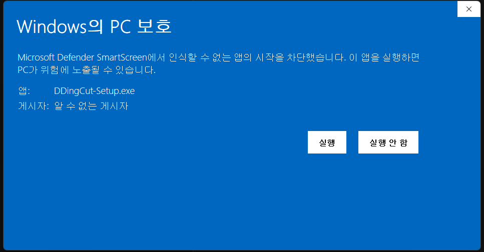

컷편집에 지친 유튜브 편집자에게
숨 고른 2초, 말이 꼬인 한마디, 했던 말 또 하기.
이제 그건 띵컷이 듣고, 당신은 고르기만 하면 돼요.
1분 15초짜리 촬영 원본이에요. 말이 멈춘 곳, 처음부터 다시 한 말을 찾아 잘라 두었어요. 오른쪽에서 무엇을 바꾸든 왼쪽 영상에 바로 나와요.
▶ 로 틀고 [원본 · 띵컷 후]를 바꿔 들어 보세요
잘린 말을 누르면 되살아나고, 줄을 누르면 거기서부터 들려요.
| 적용 | 들어 보기 | 시작 | 길이 | 사유 | 근거 |
|---|
‘이거의’를 ‘이거에’로 고쳐 보세요. 고친 글이 영상 자막에 바로 나와요.
점선은 제안이에요. 누르면 들어 보고 받아요. 받은 효과음은 재생하다 그 줄에서 울려요.
템플릿을 누르면 왼쪽 영상의 자막이 바뀌어요.
말 · 강조 · 효과, 트랙마다 모양을 정해 섞어 쓰고, 내 프리미어 자막 템플릿(.mogrt)도 불러와요.
소리는 띵컷 개발기 원본 촬영본 1분 15초를 그대로 썼고(얼굴 대신 그림을 깔았어요), 컷은 이 소리를 띵컷에 넣어 나온 그대로예요. 23분 원본 전체는 8분 39초가 됐어요.
무료 · 가입 없음 · 영상은 내 컴퓨터 밖으로 나가지 않아요
받는 중이에요. 처음 켤 때 경고 창이 한 번 떠요 — 넘기는 법 보기
띵컷은 잘릴 곳을 표시해 둘 뿐이에요. 남길지 자를지는 들어 보고 정하면 돼요.
컷마다 들어 보고 Enter 로 켜고 꺼요. 일부러 둔 정적이면 그 컷만 끄면 돼요.
[이어 듣기]를 켜면 컷만 차례로 들려줘요. 애매한 것만 골라 먼저 볼 수도 있어요.
I · O 로 잡고 Delete. 컷 경계는 프레임 단위로 끌어 맞춰요.
[덜 자르기 · 보통 · 더 자르기] 중에 골라요. 숨 쉬는 틈까지 잘리면 덜, 말이 늘어지면 더.
자막은 내 컴퓨터에서 받아 적어요. 잘린 결과를 들으면서 틀린 곳은 그 자리에서 고치면 돼요.
자막이 생기면 영상을 꾸밀 재료도 생겨요. 프리미어로 넘어가기 전에 한 화면에서 끝내요.
자막 줄마다 어울리는 효과음을 골라 줘요. 제안을 받으면 프리미어 시퀀스의 소리 트랙에 함께 들어가고, 내 효과음 폴더로 바꿀 수도 있어요.
말 · 강조 · 효과, 트랙마다 모양을 정해 섞어 쓰고, 내 프리미어 자막 템플릿(.mogrt)도 불러와 미리보기에서 바로 봐요.
파일 여러 개를 끌어다 놓으면 차례대로 이어 한 시퀀스로 만들어요. 클립끼리 소리 크기도 맞춰요.
잡은 구간만 125 · 150 · 200%로. 목소리 높낮이는 그대로예요.
창을 닫았다 다시 켜도 고친 그대로 열려요. 지난번 폴더에서 이어서 하면 돼요.
컷은 시퀀스로, 자막은 캡션 트랙으로 들어와요. 새로 배울 것 없이 이어서 편집하면 돼요.
[프리미어에서 이어 편집]을 누르면 XML 과 자막 SRT 를 한꺼번에 저장해요. 효과음은 시퀀스 안에 함께 들어가요.
프리미어에서 파일 → 가져오기(Ctrl+I)로 .xml 을 열면 시퀀스가 생겨요.
그 시퀀스를 두 번 눌러 타임라인에 열어요.
.srt 도 가져온 뒤 타임라인 위로 끌어다 놓으면 캡션 트랙이 돼요.
프리미어 없이 바로 올릴 영상이 필요하면 [영상 파일로 완성]을 눌러요. 컷 · 자막 · 효과음을 입힌 MP4 한 편이 나와요(프로그램에서만).


xattr -dr com.apple.quarantine /Applications/DDingCut.app개인이 만든 프로그램이라 아직 코드 서명 인증서를 사지 않았어요. 그래서 운영체제가 “누가 만들었는지 모른다”고 알리는 것이고, 바이러스로 판정한 것이 아니에요. 띵컷은 이 페이지와 GitHub 릴리스에서만 받으세요.
화면 왼쪽 위 애플 메뉴 → 이 Mac에 관하여. “칩”에 Apple M… 이 적혀 있으면 M칩, “프로세서”에 Intel 이 적혀 있으면 Intel 이에요.
컷마다 들어 보고 켜거나 끌 수 있어요. 전체를 [덜 자르기 · 보통 · 더 자르기]로 바꾸고, 경계는 끌어서 옮겨요. 잘못 눌러도 Ctrl+Z 로 돌아가요.
돼요. [영상 파일로 완성]을 누르면 컷 · 자막 · 효과음을 입힌 MP4 한 편이 나와요(띵컷 프로그램에서만). 자막은 SRT 파일로도 따로 저장할 수 있어서 다른 편집기에서도 쓸 수 있어요.
안 되거나 이상하면 알려 주세요. 고쳐서 새 판으로 내요.